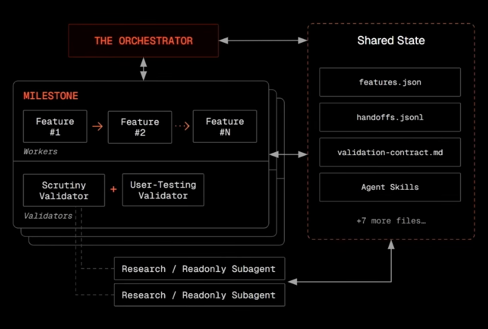
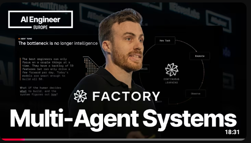

How to run Factory & droids
effectively for your projects.
Pick the surface for the job. Then automate it.
Inline chat, diff review, side-panel context. The daily driver for most engineers.
Native desktop application. Persistent sessions, mission monitoring, full plugin support.
Browser-based. Access from any machine. Share sessions with teammates.
Full-screen interface for long-running tasks and mission monitoring. Persistent sessions.
Scriptable, automatable, fast. Power users and CI integration. droid exec for headless.
Embed Factory into your own tools. Custom workflows, dashboards, triggers.
Runs on your machine. Full access to local filesystem, tools, and credentials. Zero data leaves your environment except the model API call.
Factory-managed cloud sandbox. Spin up a fully isolated compute environment for a session. No local setup required — useful for CI, onboarding, and ephemeral tasks. docs →
Bring Your Own Compute. Connect Factory to your own cloud or on-prem infrastructure. Data stays inside your perimeter. Full control over networking, secrets, and execution environment.
Type / to see everything available.
Start simple. Graduate to enforcement.
The engineering handbook. Build commands, architecture, conventions. Injected into every session automatically.
Repeatable prompts on demand. /security-review, /pr-review. Triggered manually, standardized output.
Dynamic handbooks that auto-invoke. Loaded only when relevant — credit-efficient vs AGENTS.md.
Separate agent instances with own context window and model. Delegation, parallelism, adversarial review.
Deterministic controls in the agent loop. Automated guardrails, validation, naming enforcement.
AGENTS.md in this order, stopping at the first match:
Auto-invoke knowledge. Or spawn a specialist with its own model.
Loaded only when relevant. Credit-efficient vs AGENTS.md. Stored in repo or user harness.
description is the routing surface. The model decides whether to load this skill based on your task. Write it for trigger matching, not human reading. docs →Separate context window, own model, and isolated instructions. Perfect for delegation, parallelism, and adversarial review.
Advisory becomes enforced.
Validate AGENTS.md freshness. Check repo readiness score. Enforce branch naming conventions.
Intercept file edits, shell commands, and git operations. Block dangerous patterns before execution.
rm -rf / or git push --force
Validate output structure. Enforce naming conventions. Run linters and type checkers automatically.
Generate session summaries. Update metrics. Trigger follow-up workflows or notifications.
Droid Shield runs here. Secret detection, credential scanning, and policy validation before code leaves the machine.
sk-... keys; block commit if found
Retry with backoff. Escalate to human. Log for post-mortem. Prevent infinite loops.
Bundle skills, droids, and MCPs. Share across teams.
Package skills, custom droids, MCP servers, hooks, and slash commands into a single shareable unit. Versioned, documented, and portable.
- Skills + front matter
- Custom droids with model config
- MCP server definitions
- Hooks and validation rules
Drop a plugin into .factory/plugins/ or ~/.factory/plugins/. The droid discovers and loads it automatically. No central registry required.
- Project-scoped plugins
- User harness plugins
- Auto-load on session start
- No install step needed
Set org-level default plugins via hierarchical settings. Every droid in your fleet gets the same security review droid, the same linter hooks, the same MCPs.
- Org > Folder > Project inheritance
- Extension-only merge
- Lock critical plugins at org level
- Teams add their own on top
Org-level policy that cannot be overridden.
Pick the mode for the job. Normal, Spec, or Mission.
Interactive TUI or inline chat in VS Code. Ask questions, edit files, run commands. Real-time back-and-forth. Best for exploration, quick fixes, and pairing.
- Inline chat in VS Code
- Full-screen TUI for long sessions
- Immediate feedback loop
Multi-session specs for large refactors. Capture decisions, constraints, and acceptance criteria up front. Review and approve the plan before execution. docs →
- Living document, not a dead PRD
- Progressive disclosure — detail when needed
- Review and approve before any code is written
Orchestrated workers, adversarial validators, and a plan you approve. The agent goes away and comes back with results. docs →
- Orchestrator plans, workers implement
- Fresh-context validators catch drift
- Git-native, reviewable milestones


▶Try it today.
- Describe what you want.
- Argue with the orchestrator about scope.
- Approve the plan.
- Then go do something else.
We do not hide the support channel. We make it obvious.
Factory Wiki, skill docs, and AGENTS.md patterns. Search first, ask second. docs.factory.ai →
Joint channel between ProService and Factory team. Real-time help, quick questions, and status updates.
On-demand support tickets. Escalations, bug reports, and feature requests tracked end-to-end.
Type /bug in any Factory session to file a structured bug report with context, repro steps, and session link automatically attached. Fastest path from issue to ticket. docs →
Let's work on it together. Your pilot, our support.
Take one repo to Level 2. Use the report to guide remediation.
Generate via /wiki. Set up /install-wiki for auto-refresh on every PR.
Run /install-code-review and /install-security-review on the repo.
Run /install-qa. End-to-end quality assurance on every PR.
Run /security-review. Full STRIDE + OWASP scan of the repo.
Create 2-3 skills for your key workflows. Make the agent speak your language.
Connect Linear, Slack, or internal tools via MCP. The agent needs context.
Set up persistent compute. Factory cloud or your own VM under a service account.
Slack auto-backlinking on alert channels. Droid takes first pass at triage.
Droid reads a ticket, creates a spec for approval, completes the task.
Run a migration, refactor, or greenfield task via /missions. Go do something else.
What business pain are we solving? Tie it back to one of the capabilities above.